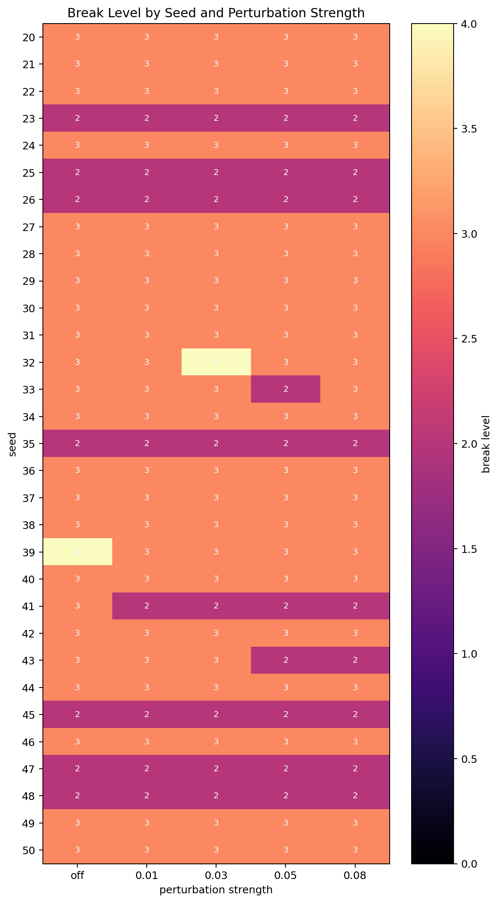
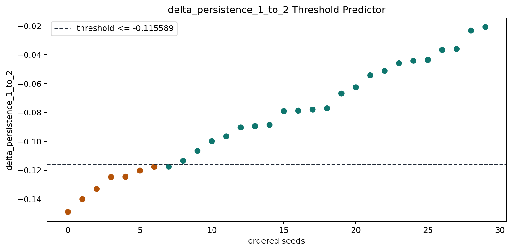
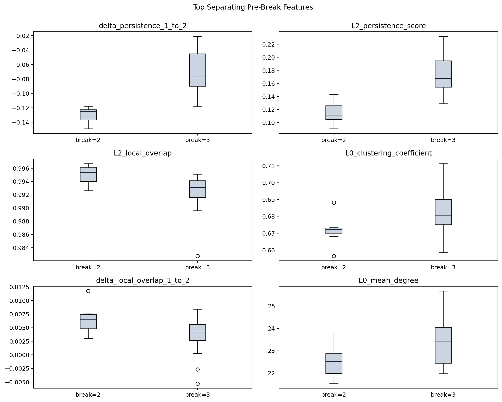
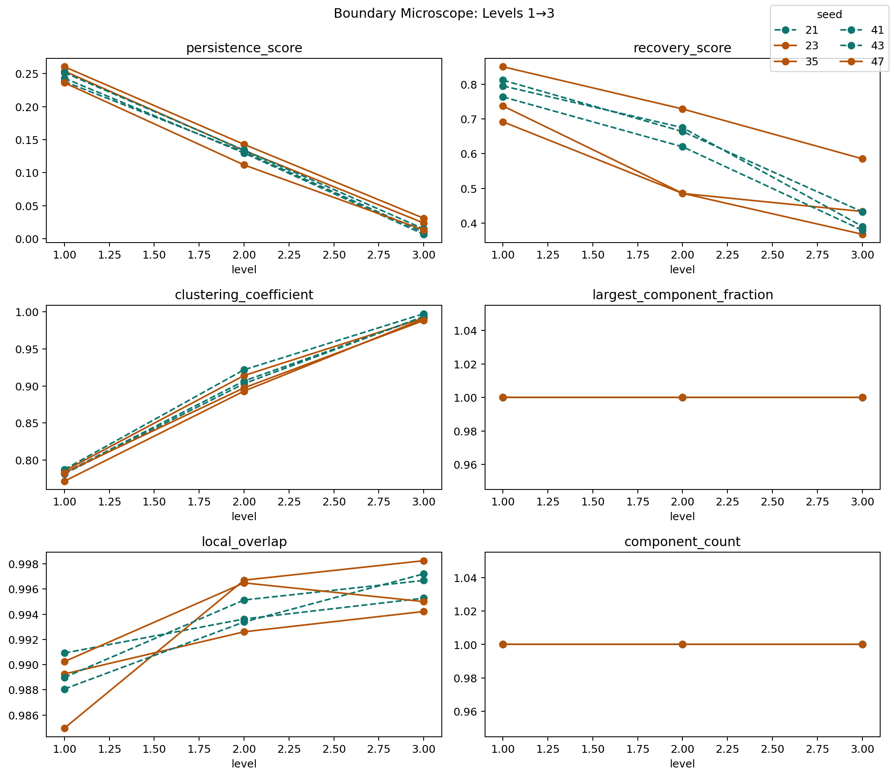
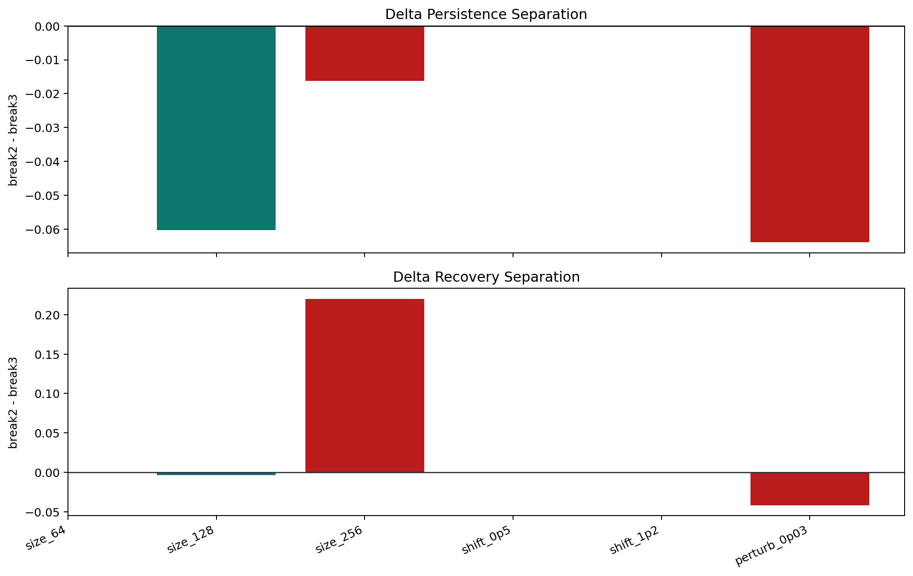
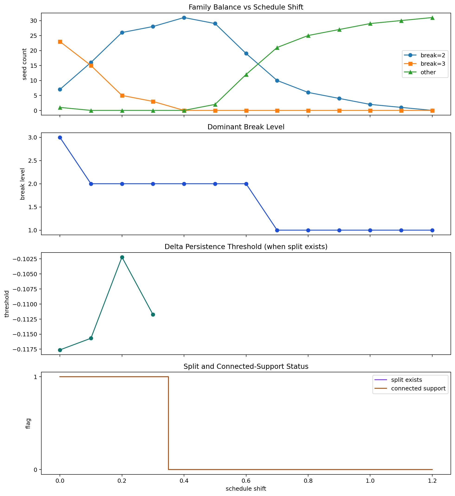

HAOS Genesis is a self-contained graph-based persistence engine designed to test whether structure survives constrained transformation. The system constructs an initial interaction graph, evolves that graph along a frozen hierarchy, and measures persistence, recovery, and overlap at each step. The present implementation is intentionally narrow: it is not a physical theory, but an operational probe for collapse and survival under cumulative change.
The main result is a validated base-regime mechanism. In the regime defined by size 128,
schedule shift 0.0, and perturbation off, collapse concentrates in a narrow band at
levels 2-3. Break family is predictable before collapse from the derivative signal
delta_persistence(1->2), with held-out accuracy 0.875 and a transition band localized
near -0.1176. Boundary inspection shows the deciding event is not graph fragmentation:
support remains connected while break-2 seeds suffer a stronger consolidation loss than
break-3 seeds. Variant testing shows that this mechanism should remain regime-local.
Schedule shift acts as a control parameter that compresses and then erases the original
2 vs 3 split.
The original risk in this class of system is to confuse a parameter sweep with an evolution. If each hierarchy level is rebuilt independently, there is no accumulation, no memory, and no honest persistence test. HAOS Genesis addresses that problem by imposing a path-dependent refinement rule.
The goal is minimal and operational: define a deterministic graph universe, apply constrained transformation through a frozen hierarchy, measure whether structure survives, and detect and predict collapse when it does not. The system is not asked to explain physics or emergence. It is asked to expose whether a reproducible collapse boundary exists, whether that boundary is predictable before it is crossed, and whether the mechanism can be described honestly within the observed regime.
A universe is defined as (G0, hierarchy trace, metrics trajectory).
G0 is the initial interaction graph, the hierarchy trace is the sequence of refined states,
and the metrics trajectory records persistence-related measurements at each level.
Nodes are placed deterministically in two-dimensional unit space using a seeded random generator. Pairwise Euclidean distances are converted into a Gaussian affinity matrix:
Edges beyond the locality radius are removed, and diagonal entries are set to zero.
For size N, the base scale is:
At hierarchy level l, the kernel width is:
where s is the schedule shift control parameter. The locality radius is:
The central correction in HAOS Genesis is the replacement of independent rebuilding with refinement from the previous state.
Given the previous graph A_prev:
T from the previous graphA_evolved = T A_prev T^TA_new = min(A_evolved, A_target)This update preserves geometry, carries forward memory, and introduces irreversibility.
Perturbation is deterministic for a fixed seed and level. The current perturbation engine applies weight jitter, low-probability rewiring, and rare node removal below one percent. Perturbation is applied after each hierarchy level when enabled, and the original graph is never mutated.
This design is useful but not interpretation-neutral: the node-removal component can create small explicit fragmentation and therefore must be treated separately from non-fragmenting stress.
Per-level metrics include:
largest_component_fractionclustering_coefficientconnectivity_diametertransport_efficiencypersistence_scorerecovery_scoreoverlapperturbation_sensitivityThe generator adds two trajectory metrics:
local_overlapdelta_persistence
These are essential. The later analysis shows that the derivative signal delta_persistence
is more informative than the absolute persistence level for predicting collapse family.
The present package includes the full analysis workflow used to derive the current results:
break=2 versus break=3
Across seeds 20-50 and strengths off, 0.01, 0.03, 0.05, and 0.08,
break levels were distributed as level 2: 42, level 3: 111, and level 4: 2.
The dominant collapse band is therefore levels 2-3.
| Strength | Break-level counts | Mean final overlap | Mean recovery | Mean failures |
|---|---|---|---|---|
| off | {2: 7, 3: 23, 4: 1} | 0.946199 | 0.555460 | 3.097 |
| 0.01 | {2: 8, 3: 23} | 0.944673 | 0.551711 | 3.161 |
| 0.03 | {2: 8, 3: 22, 4: 1} | 0.943242 | 0.548419 | 3.065 |
| 0.05 | {2: 10, 3: 21} | 0.941794 | 0.546635 | 3.161 |
| 0.08 | {2: 9, 3: 22} | 0.941286 | 0.538162 | 3.258 |
Mean final overlap and recovery drift downward with stronger perturbation, but the break band does not smear outward. Perturbation changes severity more than location.

In the base regime, delta_persistence(1->2) is the strongest predictor of collapse family.
| Feature | Threshold | Train accuracy | Held-out accuracy |
|---|---|---|---|
delta_persistence_1_to_2 | <= -0.1155894886363636 | 1.000 | 0.875 |
L2_persistence_score | <= 0.12372354822834647 | 0.955 | 0.875 |
The transition band is microscopically narrow: break-2 seed 35 lies at
-0.11766937335958003, break-3 seed 41 at
-0.1175659150560725, with midpoint -0.11761764420782626.

Base-regime effect sizes show that the split is decided before the boundary:
| Feature | Effect size |
|---|---|
delta_persistence_1_to_2 | -2.3289 |
L2_persistence_score | -2.0599 |
L2_local_overlap | 1.0273 |
L0_clustering_coefficient | -0.9327 |
delta_local_overlap_1_to_2 | 0.9034 |
This means collapse is not best predicted from the state at level 2, but from the failure
to consolidate structure during the transition into level 2.

The six seeds nearest the threshold were break-2 seeds 35, 23, 47 and break-3 seeds
41, 43, 21. Across these seeds, support remains connected through levels 1-3:
largest_component_fraction = 1.0 and component_count = 1.
| Family | Level | Persistence | Recovery | Clustering | Largest component | Local overlap |
|---|---|---|---|---|---|---|
| break-2 | 1 | 0.250181 | 0.759912 | 0.779692 | 1.0 | 0.988149 |
| break-2 | 2 | 0.129318 | 0.566563 | 0.901474 | 1.0 | 0.995264 |
| break-2 | 3 | 0.022538 | 0.462079 | 0.990282 | 1.0 | 0.995821 |
| break-3 | 1 | 0.244314 | 0.790222 | 0.783633 | 1.0 | 0.989319 |
| break-3 | 2 | 0.131726 | 0.652817 | 0.910538 | 1.0 | 0.994045 |
| break-3 | 3 | 0.010280 | 0.400757 | 0.994729 | 1.0 | 0.996386 |
The collapse boundary is therefore not a fragmentation boundary. It is a coherence or consolidation boundary inside connected support.

Mechanism validation was intentionally used to prevent over-generalization.
size_128, shift_0.0, perturbation_off. Connected support holds and stronger 1->2 consolidation loss separates break-2 from break-3.30 vs 1, so the two-family mechanism is not stable enough there.
Schedule shift behaves as a true control parameter.
| Shift | Break-2 | Break-3 | Dominant break level | Split exists |
|---|---|---|---|---|
| 0.0 | 7 | 23 | 3 | yes |
| 0.1 | 16 | 15 | 2 | yes |
| 0.2 | 26 | 5 | 2 | yes |
| 0.3 | 28 | 3 | 2 | yes |
| 0.4 | 31 | 0 | 2 | no |
| 0.7 | 10 | 0 | 1 | no |
| 1.2 | 0 | 0 | 1 | no |
The original 2 vs 3 split exists only for shifts 0.0-0.3. After that, the comparison regime itself disappears.

The main significance of HAOS Genesis is not that it collapses. Many systems collapse. The important result is that collapse becomes predictable before it happens, and that the predictor is a derivative signal localized to a specific transition step.
The strongest current interpretation is: collapse is preceded by insufficient consolidation
during the 1->2 transition. This is stronger than saying that low persistence is bad.
It says the decisive signal is not simply the state but the failed transition.
Just as importantly, the package now separates regime-local truth from broader speculation. The base mechanism holds where it was validated. Outside that regime, the system reveals different control structure instead of being forced back into the same explanation.
These are boundaries of the current claim, not defects to hide.
HAOS Genesis now supports a complete minimal loop:
The validated base-regime claim is therefore:
In the regime defined by size 128, schedule shift 0.0, and perturbation off, a seed
breaks at level 2 rather than 3 when the 1->2 transition produces a stronger consolidation
loss, while connected support remains intact.
That claim is narrow, reproducible, and operationally grounded.